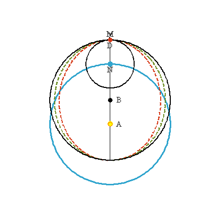
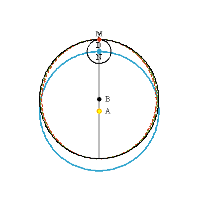
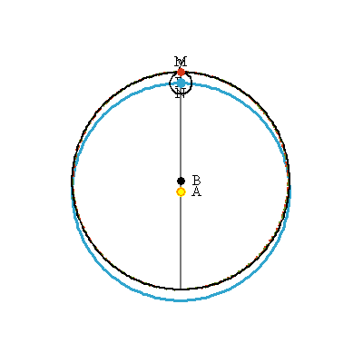

Chapter 55
“The planet's path is neither a circle nor such as to make as great an incursion from the circle at the sides as does the oval that arose from the opinion of chapter 45 and was described in chapter 46; but takes the middle course.” (p.541)
The Middle Course
Equipped with the distances determined in chapters 51 and 53, Kepler can evaluate his oval hypothesis of chapter 45 not only from the standpoint of whether it gives the correct longitudes (which he examined in chapters 46-50), but now also from solar distances. Although it is true that the planet does not move in a circle, the oval of chapter 45 causes the planet to be pulled in too far on the sides, twice too far, to be specific.
This can also be seen by the longitudinal error of the models. The circular model of chapter 43 makes the planet move too slowly in the middle longitudes, while the oval hypothesis of chapter 45, as implemented in chapter 47 and chapter 49 give exactly the opposite result -- the planet moves too swiftly in the middle longitudes!
“It is thus argued rightly that the truth is in the middle, between the two.” (p.542)
Kepler now has no reason at all to give further consideration to his hypothesis of chapter 45:
“Therefore, nothing prevents our saying that the matter is most certainly demonstrated: that the opinion of chapter 45, in remedying the excess of the perfect circle, falls into the opposite defect.
“So the physical causes of ch. 45 go up in smoke.”
Animation
Here, point M traces out the middle path between point D (which forms the red-dashed oval of chapter 45) and the black circle. Kepler does not actually propose that the planet move along M at this speed, but that the overall path traced out by point M corresponds more closely to the distances of the planet.



| Next |